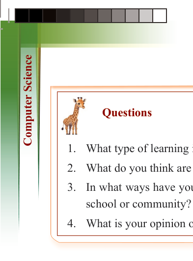
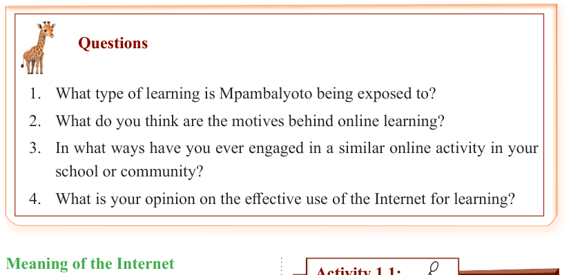

2
for Secondary Schools

1. What type of learning is Mpambalyoto being exposed to?
2. What do you think are the motives behind online learning?
3. In what ways have you ever engaged in a similar online activity in your school or community?
4. What is your opinion on the effective use of the Internet for learning?
Questions
Meaning of the Internet

The Internet is a worldwide system


of computer networks. It is a global

network of connected computer networks

and devices that communicate through

standard protocols. Protocols are rules

and procedures governing how devices

communicate and exchange data over a

network. Figure 1.1 shows an overview

of the global computer communication

through the use of the Internet.


Figure 1.1: Global communication through the


Internet


Activity 1.1:
Exploring the meaning of the Internet and its use in daily life
Aim:
To understand the Internet, how it
works, and how it is used in everyday life.
Materials:
Smartphones, tablets or a computer
with Internet access; educational video or reading materials (teacher-prepared or found online).
Instructions:
1. Research common search engines
used to find information on the
Internet. Identify at least two different types of search engines
and describe their purpose.
2. Using one of the search engines, search for the phrase “What is the
Internet?”

ComputerScin